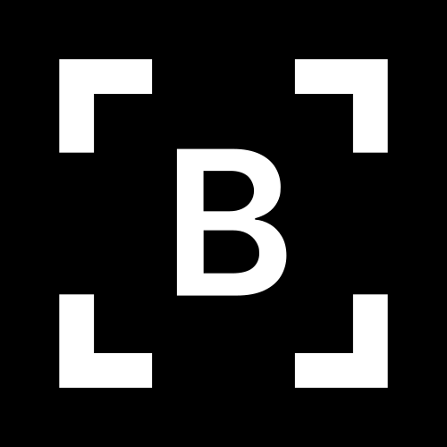

01 / MAKE YOUR POINT
Less “look over there.”
More “right here.”
Add arrows, highlights, pen marks, shapes, and another image. Crop to the detail, soften distractions with blur or mosaic, and fine-tune the finish.

Better SSDownloadFrom a quick screenshot to a document worth sharing.
All your everyday screen tools. Beautifully in one place.
The details that move the project forward.
A screenshot here. A report there. A quick explanation for someone else. Better SS brings the little things together, so you can get on with the work that matters.
Follow a screenshot from the first capture
to your next piece of work.
A small detail, a whole window, or every screen. Choose what you need and your screenshot is ready to use.
A simpler workspace gives good ideas
room to grow. Keep the details that matter.
A simpler workspace gives good ideas room to grow. Keep the details that matter.
Your screenshot. Your choice of format.
Project-notes.pngFor the screenshots, the explanations,
and everything that goes into a good draft.
Add arrows, highlights, pen marks, shapes, and another image. Crop to the detail, soften distractions with blur or mosaic, and fine-tune the finish.
Turn text in a screenshot into words you can edit and copy straight into your next draft.
Your screenshot stays in a floating preview. Pin it while you work, or drag it into a document, an app, or a folder that accepts images.
Record a screen or app window. Pause when you need a moment. Then use Better SS Split to trim the start, cut the pauses, and keep the useful parts.
Save images or a PDF. Resize before export, choose your image quality, and keep your files where you want them.
Choose light or dark. Set your capture shortcut, preview style, and sound. Save automatically or choose as you go. A guided first run helps you settle in.
Your work stays yours. Screenshots and text extraction happen on your computer. No image uploads.
Capture a reference, a result, or a detail from your screen. Keep it nearby while you work.
Point out the important part. Crop the extra space. Copy the words you need.
Drag or paste into the document you’re already writing. Export a PDF or image when you need a separate file.
Simple tools. Straight answers.
Yes. It’s built for the screenshots, references, instructions, and visual explanations that go into everyday documents. Capture, annotate, copy text, and export without opening a different tool for each step.
Better SS helps you prepare what goes into your documents: screenshots, annotations, and text copied from images. Write in your usual document app, then paste or drag your prepared content into it.
Better SS is made for Windows 10 (version 2004 or later) and Windows 11, on 64-bit PCs. It supports capturing an area, an app window, a display, or all your displays together.
You can record a display or app window, pause and resume, then trim or cut the recording with Better SS Split. Recordings currently capture video without sound. When trimming an existing video, you can keep or mute its original audio.
Captures are copied to your clipboard and can be saved to your chosen folder. Text recognition runs on your computer using an installed Windows recognition language. Better SS does not upload your screenshots.
Save screenshots as PNG, JPEG, PDF, TIFF, BMP, or GIF. Adjust image size and quality before saving. PDF exports contain your screenshot as an image; for editable words, use Extract text. Videos can be saved as MP4 or MOV.
Created by Harsh Rawat and open to everyone. Use Better SS your way, explore the code, or help shape what comes next.
MIT LICENSED. MADE FOR WINDOWS.